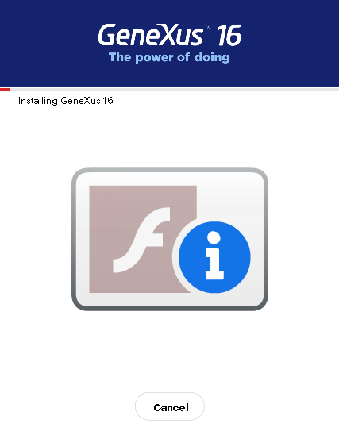

This document explains why you may find a Flash player icon when running GeneXus suite setups in Windows systems. SymptomWhen you execute a setup of GeneXus or any related product (*) in an updated Windows Server 2016, 2019 or any updated Windows edition or version, you see a Flash player icon  CauseThe setup requires Adobe Flash Player to show animations with information about the features of the product, and Adobe Flash Player is not enabled on that system. But Adobe discontinued Flash player support, and Windows shows that kind of information when it cannot run the associated flash scripts. References: SolutionThere is no bigger issue associated with this, than the fact that you do not see some informational messages regarding features of the GeneXus product, and there is no solution provided. Note: Setups related to GeneXus 17 and newer versions do not have this issue.
(*) Scope1) Setups of version 16 upgrade 11 or prior of
2) Setup of GXquery 4.0 Upgrade 1 or prior 3) Setup of GeneXus Protection Server version 9.7.5.12 or prior Note: This problem has been solved in setups of GeneXus 17 or higher and newer setups of GXquery by avoiding to require Adobe Flash Player..
See Also
|